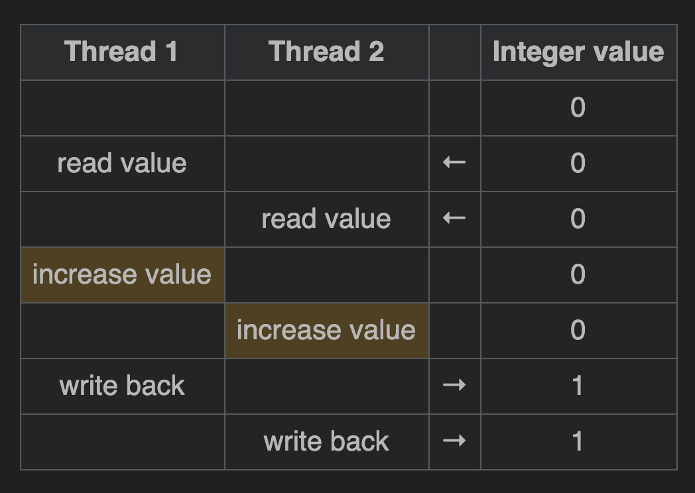

关于Java ConcurrentMap的一些心得
果然写代码永远是最后一步，把文档看好，逻辑理清楚比什么都强。
前言
最近在写项目的时候用到了Java的ConcurrentHashMap。ConcurrentHashMap除了实现了和普通map一样
的Map接口外，还实现了ConcurrentMap接口。虽然说ConcurrentMap的所有operation都是thread-safe的，
但是如果选用不合适的代码组合仍然可能导致不同线程间的overlap。
比如说，get()是非阻塞的，不上锁的（参加Javadoc）。如果有两个线程A和B，CPU实际操作顺序是，A先get，之后B get然后put，
这时A再put的时候会基于旧值进行put，导致丢失了B put的结果。这个听起来有点像数据库中Lost of Modify，
也有叫Lost Update的。放张图方便理解：

文档中是这样描述的：
…However, even though all operations are thread-safe, retrieval operations do not entail locking, and there is not any support for locking the entire table in a way that prevents all access. This class is fully interoperable with Hashtable in programs that rely on its thread safety but not on its synchronization details.
Retrieval operations (including get) generally do not block, so may overlap with update operations (including put and remove). Retrievals reflect the results of the most recently completed update operations holding upon their onset. (More formally, an update operation for a given key bears a happens-before relation with any (non-null) retrieval for that key reporting the updated value.) …
为了正确地使用ConcurrentMap，个人做了点研究，并总结了一些心得。
What is Thread Safety?
先来看一下什么叫做线程安全。
Wikipedia中提到线程安全有多种理解方式。这里选用个人认为比较常用的是以下这种：
Thread safe: Implementation is guaranteed to be free of race conditions when accessed by multiple threads simultaneously.
Race Condition具体是什么请自行查阅，此处放张图简要解释（其实上面那张图也可以理解为广义的race condition问题）：

重点不在于定义，而是达到线程安全的方法。这些方法一般分为两类，重点就在于，分类的依据是什么？
一种着力于avoid shared state，而另一种shared state cannot be avoided.
前者：Re-entrancy lock（可重入锁），Thread-local storage（线程本地变量），Immutable objects（不可变对象）
后者：Mutual exclusion（互斥机制），Atomic operations（原子操作）
联想Volatile
此处联想一下volatile。volatile有一句很不精确的总结：“可以保证可见性，不可以保证原子性”。其实oracle官方对volatile的定义是，对于volatile类型的变量，read和write是原子性操作。
听起来好像前后矛盾是不是？其实问题在于，原子性描述的对象不一样。对于volatile变量本身而言（map中的那个key而言），操作确实是原子级，保证线程安全的。但是对于涉及到这个变量的复合操作（i++，map中先get现有值并在此基础上put）而言，是不具备原子性的！这也许就是所谓的，shared state，数据结构/代码段的当前状态的共享，是无法避免的（本应避免）。
所以，volatile无法作为线程安全的计数器使用。同理，如果还只用Map接口中的get和put方法的话，也是无法胜任需求的。
ConcurrentMap中复合操作的原子级方法
在ConcurrentMap接口中，提供了以下四种atomically的方法：
- putIfAbsent(K key, V value)
- remove(Object key, Object value)
- replace(K key, V oldValue, V newValue)
- replace(K key, V value)
每种操作都提供了一个示例，用来介绍这个方法表示的是什么样的复合操作。比如对于putIfAbsent:
1 | if (!map.containsKey(key)) |
就是很常见的，如果不存在就更新，如果存在就取值（LRU模拟实现过程）。
对于实现了ConcurrentMap接口的ConcurrentHashMap，有8个原子级复合操作，除了上述的四个以外，还有：
- public V computeIfAbsent(K key, Function<? super K,? extends V> mappingFunction)
- public V computeIfPresent(K key, BiFunction<? super K,? super V,? extends V> remappingFunction)
- public V compute(K key, BiFunction<? super K,? super V,? extends V> remappingFunction)
- public V merge(K key, V value, BiFunction<? super V,? super V,? extends V> remappingFunction)
这四个方法override了Map接口。
利用这个8个方法，我们可以将很多复合操作原子化，从而使整个对于ConcurrentHashMap的操作避免race conditions带来的问题。
比如我们想要做一件事：如果map1存在key1，那么更新key1 += someval; 否则添加一个条目<key1, someval>。我们可以这样写：
1 | V v = map1.putIfAbsent(key1, someval); |
如果map1没有这个key1，那么putIfAbsent可以保证原子性的增添一个条目。负责增添的那次调用会返回null值，也就是说不会进入下一个判断；其他的线程发现返回值不是null，说明已经有线程增添过这个条目了，那么自己所需要的，就是更新条目值。这个过程可以用computeIfPresent原子性地做到。
·